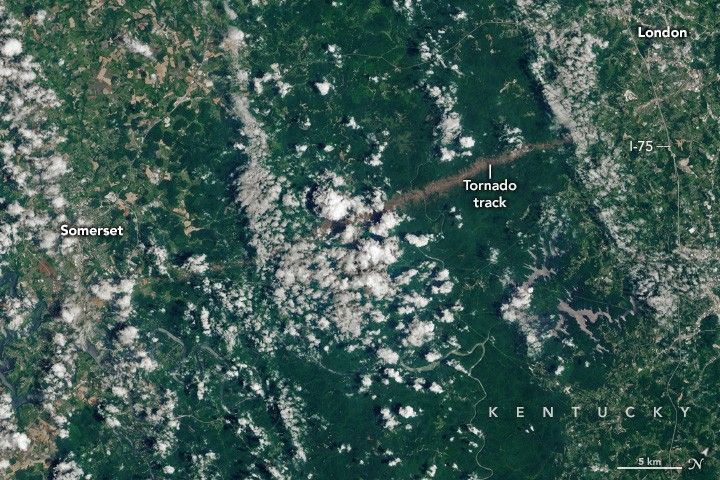

A Tornado’s Mark on Kentucky
Amid a spate of severe weather across the U.S. Midwest, Southeast, and Mid-Atlantic regions on May 16, 2025, a deadly tornado tore across three counties in Kentucky. It was one of the strongest tornadoes ever recorded in the area, according to the National Weather Service (NWS) office in Jackson, Kentucky. The NWS assessment found that the path of damage extended nearly 56 miles (90 kilometers) and reached a maximum width of nearly a mile (1.6 kilometers).
The OLI-2 (Operational Land Imager-2) on Landsat 9 acquired these images of part of the tornado’s scar on June 4, 2025—the first mostly cloud-free Landsat scene since the event. (Note that the image is slightly rotated to include more of the track.) The tornado touched down near the community of Whittle, about 20 miles west of Somerset, around 10:30 p.m. local time on May 16; it lifted just east of London shortly before midnight.
An NWS analysis indicates that the tornado peaked as an EF-4—the second-highest rating on the Enhanced Fujita (EF) scale, which derives wind speeds based on observed damage. Estimated wind speeds during this event reached as high as 170 miles (274 kilometers) per hour. Some of the most serious destruction occurred along the part of the path shown in the image above, according to damage survey data.
The tornado strengthened to an EF-3 as it approached Somerset, where it caused “catastrophic damage” in parts of the city. A high-tension power pole east of the city was lifted, crumpled, and sent flying for several hundred yards, surveys found. Just west of Interstate 75 near London, the tornado strengthened again, this time to an EF-4, causing destruction and casualties. The tornado flattened buildings and swept some homes off their foundations, among other damage.
A satellite image of Kentucky shows an area of Daniel Boone National Forest. The land cover is mostly dark green with some winding rivers cutting across it. A tornado track, appearing as a light brown, unvegetated swath, runs on a slight diagonal from left to right across the image.
All along its track, winds snapped, uprooted, and tore bark and branches off trees, making the tornado’s trajectory visible in satellite imagery. The tornado’s path of destruction reached its widest point as it crossed Daniel Boone National Forest. The detailed image above shows the stark swath of affected vegetation.
Tornado damage to forests in the southeastern U.S. has been on the rise in recent decades, according to a 2024 study. Researchers used the National Land Cover Database, a Landsat-based data product, to identify and track forested land. They found that while tornado frequency across the U.S. has decreased slightly, the regional distribution has shifted from the Midwest toward the Southeast. As a result, southeastern states have seen an increase in tornado-damaged forests. The uptick has implications for forest ecosystems, carbon storage, and management practices.